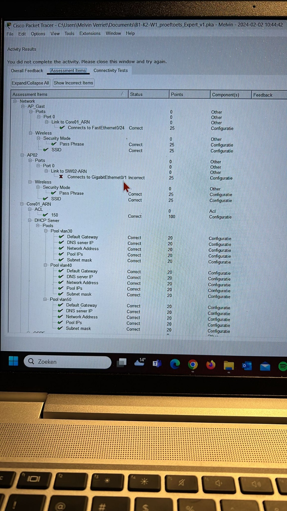
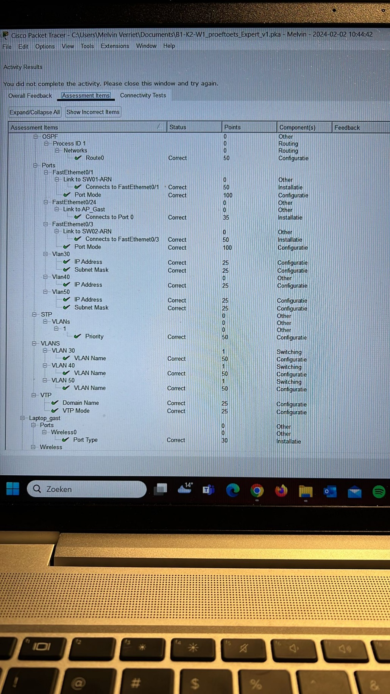
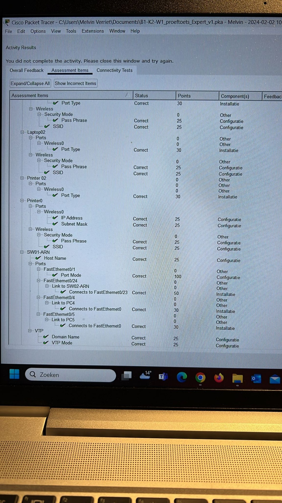
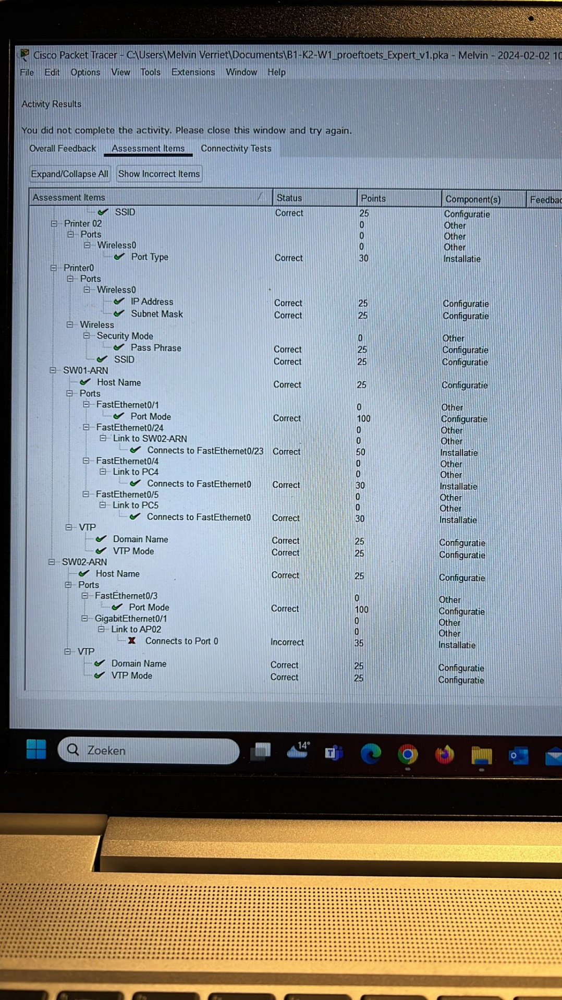
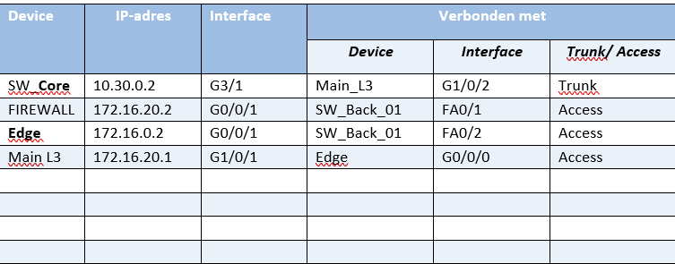
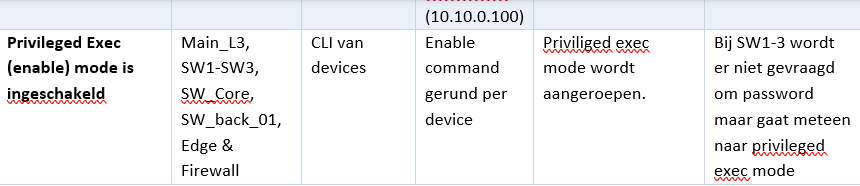
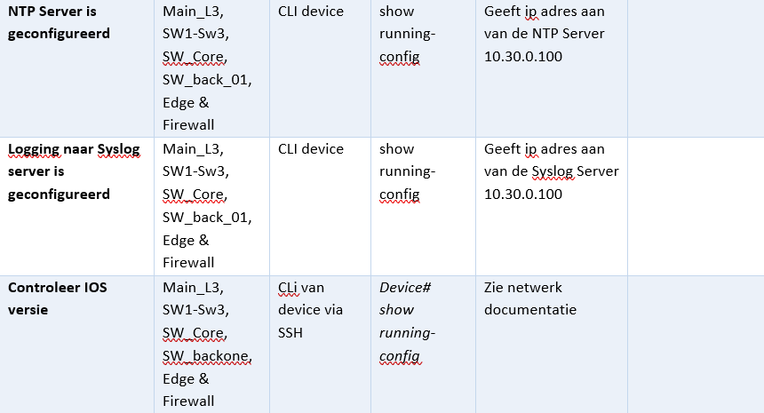
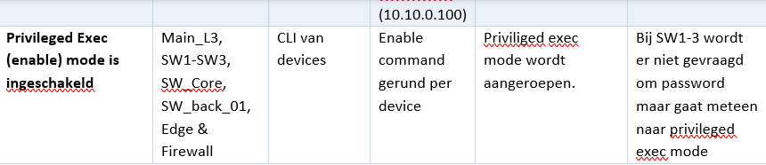
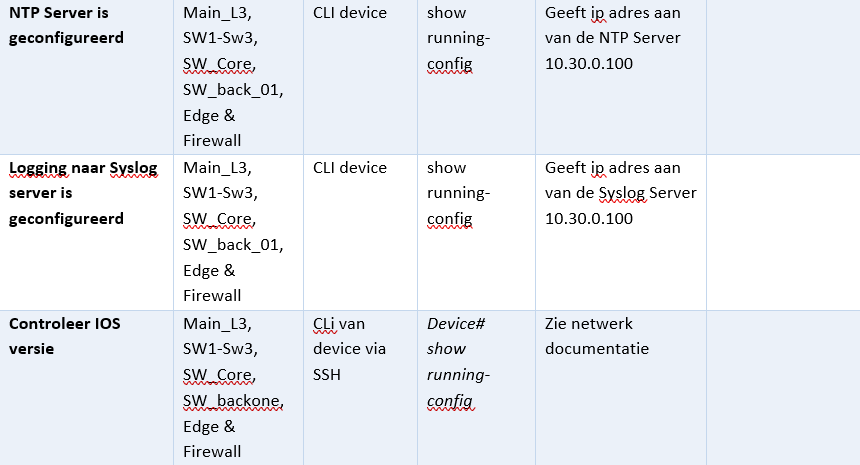

Belangrijke commands voor examen B1-K2-W1:
- Dit aanzetten in PT: ‘Options-Preferences-show device name labels/always show port labels in logical workspace’
- show lldp neighbors = laat andere apparaten in het netwerk zien.
- do show ip int brief = laat overzicht zien van ip-plan.
- ip default-gateway … … … … =
- no ip domain-lookup = zorgt ervoor dat foutieve zoekfunctie weggehaald wordt
- show running-config = laat zien wat momenteel in netwerk zichtbaar is.
- Do write mem (slaat configuratie op naar running-config)
- vtp domain DOMEINNAAM
- vtp mode CLIENT of SERVER
- show spanning-tree = Hiermee onderzoek je welke de root switch is. Dit moet je bij alle (3 of 4) relevante switches uitvoeren.
- spanning-tree vlan “VLAN_ID” priority 0
- interface vlan 1
ip-address ….. …..
interface vlan 1
no shutdown
trunk poorten op Core01_ARN configureren en alle VLANS doorlaten
- interface range FastEthernet0/1, FastEthernet0/3
switchport mode trunk
- dhcp pools per vlan op de Core01_ARN aanmaken
ip dhcp pool vlan.. (zie documentatie)
- Switch hostname = switch name zelf!
- Switchport mode trunk
LET OP!
- Opmerking staat bij specifieke VLAN = switchport mode access
Switchport access VLAN NAAM (voorbeeld: switchport mode vlan 40)
- Accespoint nooit hardware eruit halen (bij oefenexamen)
- GEBRUIK ALTIJD NO SHUTDOWN in een interface!
Voorbeeld: int fa0/1
no shutdown
Tip:
- - Herhalende commands kopieren naar kladblok, scheelt onnodig veel typewerk. Je hoeft dan alleen maar de namen en IP-adressen te veranderen.




Belangrijke commands voor examen B1-K2-W2:
- Ssh -l *username* *Ipaddress*
- Password
- Enable
- Show CDP (Om te veriferen of CDP uit staat)
- no cdp run (moet uitstaan voor LLDP)
- LLDP run (om LLDP te starten)
- Show cdp neighbors = laat zien om welke devices de buren zijn.
- Show cdp neigbors detail = laat de IP-adressen zien.
- Interface g2/1
- No lldp transmit (om de SW_CORE alleen te laten ontvangen en niet verzenden naar Switch 1 voor security reasons)
- Do show lldp Neighbors (hier krijg je een lijst te zien van apparaten die verbonden zijn met SW_CORE)
- Show vlan brief
- Show running-config
- Show ip interface brief
- show lldp neighbors detail
- show tech-support (Shows device type)
- arp -a (displays routing table)
- Show ntp association
- traceroute


Verificatie en Testen
- Goed documenteren - Voorbeeld: Ik gebruik bij deze test een PC, Command Prompt en een switch.
 


